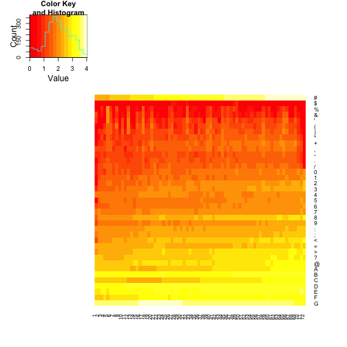
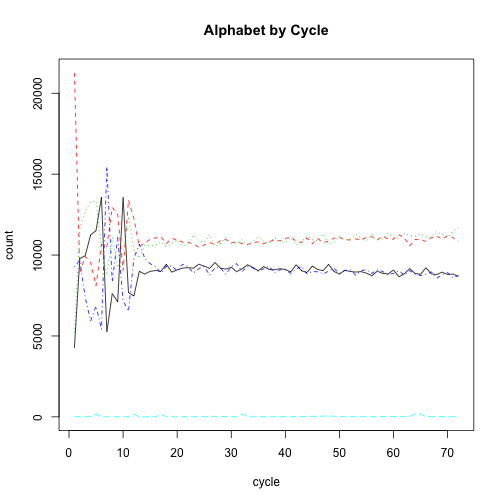

The FASTQ format is a standard for storing sequence data and associated quality scores in a simple text format file. A first step in many analyses is to perform basic quality control on the FASTQ files. The Bioconductor ShortRead package is quite useful for doing this with very little code.
First, if the ShortRead package has not been installed, install it using the standard Biodonductor installation process.
source('http://bioconductor.org/biocLite.R')
biocLite('ShortRead')
Once installed, load the library:
library(ShortRead)
The ShortRead package includes some example FASTQ files. The way that we can find those files is
to use system.file. This function looks up the location of the ShortRead installation and
then finds files relative to that location. In this case, we are going to get the file locations
for two small FASTQ files.
# I just know from previous looking that the fastq files are here
fastqDir = system.file(package='ShortRead','extdata/E-MTAB-1147')
Now, we can read the FASTQ files in this directory using readFastq.
fq = readFastq(dirPath = fastqDir,pattern='*.fastq.gz')
## Warning: closing unused connection 69
## (/Users/sdavis2/Documents/git/RForBioinformatics/section3/vectors.Rmd)
## Warning: closing unused connection 68
## (/Users/sdavis2/Documents/git/RForBioinformatics/section3/vectors.md)
## Warning: closing unused connection 67
## (/Users/sdavis2/Documents/git/RForBioinformatics/section2/InteractingWithR.Rmd)
## Warning: closing unused connection 66
## (/Users/sdavis2/Documents/git/RForBioinformatics/section2/InteractingWithR.md)
## Warning: closing unused connection 65
## (/Users/sdavis2/Documents/git/RForBioinformatics/section2/Installation.mmd)
## Warning: closing unused connection 64
## (/Users/sdavis2/Documents/git/RForBioinformatics/section2/Installation.md)
## Warning: closing unused connection 63
## (/Users/sdavis2/Documents/git/RForBioinformatics/section1/README.Rmd)
## Warning: closing unused connection 62
## (/Users/sdavis2/Documents/git/RForBioinformatics/references.Rmd)
## Warning: closing unused connection 61
## (/Users/sdavis2/Documents/git/RForBioinformatics/references.md)
## Warning: closing unused connection 60
## (/Users/sdavis2/Documents/git/RForBioinformatics/node_modules/gitbook-plugin-mathjax/node_modules/MathJax-node/node_modules/yargs/node_modules/decamelize/readme.md)
## Warning: closing unused connection 59
## (/Users/sdavis2/Documents/git/RForBioinformatics/node_modules/gitbook-plugin-mathjax/node_modules/MathJax-node/node_modules/yargs/node_modules/camelcase/readme.md)
## Warning: closing unused connection 58
## (/Users/sdavis2/Documents/git/RForBioinformatics/node_modules/gitbook-plugin-mathjax/node_modules/MathJax-node/node_modules/yargs/CHANGELOG.md)
## Warning: closing unused connection 57
## (/Users/sdavis2/Documents/git/RForBioinformatics/node_modules/gitbook-plugin-mathjax/node_modules/MathJax-node/node_modules/speech-rule-engine/node_modules/xmldom/readme.md)
## Warning: closing unused connection 56
## (/Users/sdavis2/Documents/git/RForBioinformatics/node_modules/gitbook-plugin-mathjax/node_modules/MathJax-node/node_modules/speech-rule-engine/node_modules/commander/Readme.md)
## Warning: closing unused connection 55
## (/Users/sdavis2/Documents/git/RForBioinformatics/node_modules/gitbook-plugin-mathjax/node_modules/MathJax-node/node_modules/speech-rule-engine/node_modules/commander/History.md)
## Warning: closing unused connection 54
## (/Users/sdavis2/Documents/git/RForBioinformatics/node_modules/gitbook-plugin-mathjax/node_modules/MathJax-node/node_modules/jsdom/node_modules/request/node_modules/qs/CONTRIBUTING.md)
## Warning: closing unused connection 53
## (/Users/sdavis2/Documents/git/RForBioinformatics/node_modules/gitbook-plugin-mathjax/node_modules/MathJax-node/node_modules/jsdom/node_modules/request/node_modules/qs/CHANGELOG.md)
## Warning: closing unused connection 52
## (/Users/sdavis2/Documents/git/RForBioinformatics/node_modules/gitbook-plugin-mathjax/node_modules/MathJax-node/node_modules/jsdom/node_modules/request/node_modules/node-uuid/LICENSE.md)
## Warning: closing unused connection 51
## (/Users/sdavis2/Documents/git/RForBioinformatics/node_modules/gitbook-plugin-mathjax/node_modules/MathJax-node/node_modules/jsdom/node_modules/request/node_modules/mime-types/node_modules/mime-db/HISTORY.md)
## Warning: closing unused connection 50
## (/Users/sdavis2/Documents/git/RForBioinformatics/node_modules/gitbook-plugin-mathjax/node_modules/MathJax-node/node_modules/jsdom/node_modules/request/node_modules/mime-types/HISTORY.md)
## Warning: closing unused connection 49
## (/Users/sdavis2/Documents/git/RForBioinformatics/node_modules/gitbook-plugin-mathjax/node_modules/MathJax-node/node_modules/jsdom/node_modules/request/node_modules/json-stringify-safe/CHANGELOG.md)
## Warning: closing unused connection 48
## (/Users/sdavis2/Documents/git/RForBioinformatics/node_modules/gitbook-plugin-mathjax/node_modules/MathJax-node/node_modules/jsdom/node_modules/request/node_modules/isstream/LICENSE.md)
## Warning: closing unused connection 47
## (/Users/sdavis2/Documents/git/RForBioinformatics/node_modules/gitbook-plugin-mathjax/node_modules/MathJax-node/node_modules/jsdom/node_modules/request/node_modules/http-signature/http_signing.md)
## Warning: closing unused connection 46
## (/Users/sdavis2/Documents/git/RForBioinformatics/node_modules/gitbook-plugin-mathjax/node_modules/MathJax-node/node_modules/jsdom/node_modules/request/node_modules/hawk/node_modules/hoek/CONTRIBUTING.md)
## Warning: closing unused connection 45
## (/Users/sdavis2/Documents/git/RForBioinformatics/node_modules/gitbook-plugin-mathjax/node_modules/MathJax-node/node_modules/jsdom/node_modules/request/node_modules/hawk/node_modules/boom/CONTRIBUTING.md)
## Warning: closing unused connection 44
## (/Users/sdavis2/Documents/git/RForBioinformatics/node_modules/gitbook-plugin-mathjax/node_modules/MathJax-node/node_modules/jsdom/node_modules/request/node_modules/har-validator/node_modules/commander/Readme.md)
## Warning: closing unused connection 43
## (/Users/sdavis2/Documents/git/RForBioinformatics/node_modules/gitbook-plugin-mathjax/node_modules/MathJax-node/node_modules/jsdom/node_modules/request/node_modules/har-validator/node_modules/commander/History.md)
## Warning: closing unused connection 42
## (/Users/sdavis2/Documents/git/RForBioinformatics/node_modules/gitbook-plugin-mathjax/node_modules/MathJax-node/node_modules/jsdom/node_modules/request/node_modules/har-validator/node_modules/chalk/readme.md)
## Warning: closing unused connection 41
## (/Users/sdavis2/Documents/git/RForBioinformatics/node_modules/gitbook-plugin-mathjax/node_modules/MathJax-node/node_modules/jsdom/node_modules/request/node_modules/har-validator/node_modules/chalk/node_modules/supports-color/readme.md)
## Warning: closing unused connection 40
## (/Users/sdavis2/Documents/git/RForBioinformatics/node_modules/gitbook-plugin-mathjax/node_modules/MathJax-node/node_modules/jsdom/node_modules/request/node_modules/har-validator/node_modules/chalk/node_modules/strip-ansi/readme.md)
## Warning: closing unused connection 39
## (/Users/sdavis2/Documents/git/RForBioinformatics/node_modules/gitbook-plugin-mathjax/node_modules/MathJax-node/node_modules/jsdom/node_modules/request/node_modules/har-validator/node_modules/chalk/node_modules/strip-ansi/node_modules/ansi-regex/readme.md)
## Warning: closing unused connection 38
## (/Users/sdavis2/Documents/git/RForBioinformatics/node_modules/gitbook-plugin-mathjax/node_modules/MathJax-node/node_modules/jsdom/node_modules/request/node_modules/har-validator/node_modules/chalk/node_modules/has-ansi/readme.md)
## Warning: closing unused connection 37
## (/Users/sdavis2/Documents/git/RForBioinformatics/node_modules/gitbook-plugin-mathjax/node_modules/MathJax-node/node_modules/jsdom/node_modules/request/node_modules/har-validator/node_modules/chalk/node_modules/has-ansi/node_modules/ansi-regex/readme.md)
## Warning: closing unused connection 36
## (/Users/sdavis2/Documents/git/RForBioinformatics/node_modules/gitbook-plugin-mathjax/node_modules/MathJax-node/node_modules/jsdom/node_modules/request/node_modules/har-validator/node_modules/chalk/node_modules/escape-string-regexp/readme.md)
## Warning: closing unused connection 35
## (/Users/sdavis2/Documents/git/RForBioinformatics/node_modules/gitbook-plugin-mathjax/node_modules/MathJax-node/node_modules/jsdom/node_modules/request/node_modules/har-validator/node_modules/chalk/node_modules/ansi-styles/readme.md)
## Warning: closing unused connection 34
## (/Users/sdavis2/Documents/git/RForBioinformatics/node_modules/gitbook-plugin-mathjax/node_modules/MathJax-node/node_modules/jsdom/node_modules/request/node_modules/form-data/Readme.md)
## Warning: closing unused connection 33
## (/Users/sdavis2/Documents/git/RForBioinformatics/node_modules/gitbook-plugin-mathjax/node_modules/MathJax-node/node_modules/jsdom/node_modules/request/node_modules/form-data/node_modules/mime-types/node_modules/mime-db/HISTORY.md)
## Warning: closing unused connection 32
## (/Users/sdavis2/Documents/git/RForBioinformatics/node_modules/gitbook-plugin-mathjax/node_modules/MathJax-node/node_modules/jsdom/node_modules/request/node_modules/form-data/node_modules/mime-types/HISTORY.md)
## Warning: closing unused connection 31
## (/Users/sdavis2/Documents/git/RForBioinformatics/node_modules/gitbook-plugin-mathjax/node_modules/MathJax-node/node_modules/jsdom/node_modules/request/node_modules/form-data/node_modules/async/CHANGELOG.md)
## Warning: closing unused connection 30
## (/Users/sdavis2/Documents/git/RForBioinformatics/node_modules/gitbook-plugin-mathjax/node_modules/MathJax-node/node_modules/jsdom/node_modules/request/node_modules/extend/CHANGELOG.md)
## Warning: closing unused connection 29
## (/Users/sdavis2/Documents/git/RForBioinformatics/node_modules/gitbook-plugin-mathjax/node_modules/MathJax-node/node_modules/jsdom/node_modules/request/node_modules/combined-stream/Readme.md)
## Warning: closing unused connection 28
## (/Users/sdavis2/Documents/git/RForBioinformatics/node_modules/gitbook-plugin-mathjax/node_modules/MathJax-node/node_modules/jsdom/node_modules/request/node_modules/combined-stream/node_modules/delayed-stream/Readme.md)
## Warning: closing unused connection 27
## (/Users/sdavis2/Documents/git/RForBioinformatics/node_modules/gitbook-plugin-mathjax/node_modules/MathJax-node/node_modules/jsdom/node_modules/request/node_modules/bl/LICENSE.md)
## Warning: closing unused connection 26
## (/Users/sdavis2/Documents/git/RForBioinformatics/node_modules/gitbook-plugin-mathjax/node_modules/MathJax-node/node_modules/jsdom/node_modules/request/CONTRIBUTING.md)
## Warning: closing unused connection 25
## (/Users/sdavis2/Documents/git/RForBioinformatics/node_modules/gitbook-plugin-mathjax/node_modules/MathJax-node/node_modules/jsdom/node_modules/request/CHANGELOG.md)
## Warning: closing unused connection 24
## (/Users/sdavis2/Documents/git/RForBioinformatics/node_modules/gitbook-plugin-mathjax/node_modules/MathJax-node/node_modules/jsdom/node_modules/parse5/CHANGELOG.md)
## Warning: closing unused connection 23
## (/Users/sdavis2/Documents/git/RForBioinformatics/node_modules/gitbook-plugin-mathjax/node_modules/MathJax-node/node_modules/jsdom/node_modules/htmlparser2/node_modules/entities/readme.md)
## Warning: closing unused connection 22
## (/Users/sdavis2/Documents/git/RForBioinformatics/node_modules/gitbook-plugin-mathjax/node_modules/MathJax-node/node_modules/jsdom/node_modules/htmlparser2/node_modules/domutils/readme.md)
## Warning: closing unused connection 21
## (/Users/sdavis2/Documents/git/RForBioinformatics/node_modules/gitbook-plugin-mathjax/node_modules/MathJax-node/node_modules/jsdom/node_modules/htmlparser2/node_modules/domutils/node_modules/dom-serializer/node_modules/entities/readme.md)
## Warning: closing unused connection 20
## (/Users/sdavis2/Documents/git/RForBioinformatics/node_modules/gitbook-plugin-mathjax/node_modules/MathJax-node/node_modules/jsdom/node_modules/htmlparser2/node_modules/domutils/node_modules/dom-serializer/node_modules/domelementtype/readme.md)
## Warning: closing unused connection 19
## (/Users/sdavis2/Documents/git/RForBioinformatics/node_modules/gitbook-plugin-mathjax/node_modules/MathJax-node/node_modules/jsdom/node_modules/htmlparser2/node_modules/domhandler/readme.md)
## Warning: closing unused connection 18
## (/Users/sdavis2/Documents/git/RForBioinformatics/node_modules/gitbook-plugin-mathjax/node_modules/MathJax-node/node_modules/jsdom/node_modules/htmlparser2/node_modules/domelementtype/readme.md)
## Warning: closing unused connection 17
## (/Users/sdavis2/Documents/git/RForBioinformatics/node_modules/gitbook-plugin-mathjax/node_modules/MathJax-node/node_modules/jsdom/node_modules/cssom/README.mdown)
## Warning: closing unused connection 16
## (/Users/sdavis2/Documents/git/RForBioinformatics/node_modules/gitbook-plugin-mathjax/node_modules/MathJax-node/node_modules/jsdom/node_modules/contextify/node_modules/nan/LICENSE.md)
## Warning: closing unused connection 15
## (/Users/sdavis2/Documents/git/RForBioinformatics/node_modules/gitbook-plugin-mathjax/node_modules/MathJax-node/node_modules/jsdom/node_modules/contextify/node_modules/nan/CHANGELOG.md)
## Warning: closing unused connection 14
## (/Users/sdavis2/Documents/git/RForBioinformatics/InteractingWithR.md)
## Warning: closing unused connection 13
## (/Users/sdavis2/Documents/git/RForBioinformatics/graphics/ggplot2.Rmd)
## Warning: closing unused connection 12
## (/Users/sdavis2/Documents/git/RForBioinformatics/graphics/ggplot2.md)
## Warning: closing unused connection 11
## (/Users/sdavis2/Documents/git/RForBioinformatics/GLOSSARY.md)
## Warning: closing unused connection 10
## (/Users/sdavis2/Documents/git/RForBioinformatics/exercises/Data-exercises.Rmd)
## Warning: closing unused connection 9
## (/Users/sdavis2/Documents/git/RForBioinformatics/exercises/Data-exercises.md)
## Warning: closing unused connection 8
## (/Users/sdavis2/Documents/git/RForBioinformatics/bio1/FASTQ.Rmd)
## Warning: closing unused connection 7
## (/Users/sdavis2/Documents/git/RForBioinformatics/bio1/FASTQ.md)
## Warning: closing unused connection 6
## (/Users/sdavis2/Documents/git/RForBioinformatics/_book/section2/InteractingWithR.md)
## Warning: closing unused connection 5
## (/Users/sdavis2/Documents/git/RForBioinformatics/_book/section2/Installation.mmd)
## Warning: closing unused connection 4
## (/Users/sdavis2/Documents/git/RForBioinformatics/_book/references.md)
fq
## class: ShortReadQ
## length: 40000 reads; width: 72 cycles
The fq object now contains 40000 reads, each 72 bp (cycles) long. Next, we are going to
calculate the number of bases with each quality over each cycle.
m = alphabetByCycle(quality(fq))
dim(m)
## [1] 94 72
head(m[,1:8])
## cycle
## alphabet [,1] [,2] [,3] [,4] [,5] [,6] [,7] [,8]
## 0 0 0 0 0 0 0 0
## ! 0 0 0 0 0 0 0 0
## " 0 0 0 0 0 0 0 0
## # 199 220 233 241 249 274 289 304
## $ 0 0 0 1 2 0 0 0
## % 2 2 6 0 89 7 0 11
So, we have a matrix of numbers and we'd like to see if there is any structure in those numbers. A heatmap can be very useful for looking at matrices, so we can try that here.
library(gplots)
heatmap.2(log10(m[4:40,]+1),Rowv = NA, Colv=NA,trace="none")
## Warning in heatmap.2(log10(m[4:40, ] + 1), Rowv = NA, Colv = NA, trace =
## "none"): Discrepancy: Rowv is FALSE, while dendrogram is `none'. Omitting
## row dendogram.

We can also look a the base-by-cycle of the actual sequences in our data using a similar approach. \
m = alphabetByCycle(sread(fq))
head(m[,1:8])
## cycle
## alphabet [,1] [,2] [,3] [,4] [,5] [,6] [,7] [,8]
## A 4253 9782 9965 11241 11512 13574 5237 7621
## C 21264 8913 9913 9533 8108 10664 10524 12942
## G 5193 11617 12729 13279 13345 10337 8770 11097
## T 9267 9677 7376 5937 6862 5413 15461 8331
## M 0 0 0 0 0 0 0 0
## R 0 0 0 0 0 0 0 0
We can pull out only the bases we are interested in and then make a matrix plot to look at the base biases along the length of the reads:
ms = t(m[c('A','C','G','T','N'),])
matplot(ms,type='l',xlab='cycle',ylab='count',main='Alphabet by Cycle')

sessionInfo()
## R version 3.2.1 (2015-06-18)
## Platform: x86_64-apple-darwin13.4.0 (64-bit)
## Running under: OS X 10.10 (Yosemite)
##
## locale:
## [1] en_US.UTF-8/en_US.UTF-8/en_US.UTF-8/C/en_US.UTF-8/en_US.UTF-8
##
## attached base packages:
## [1] stats4 parallel stats graphics grDevices utils datasets
## [8] methods base
##
## other attached packages:
## [1] biomaRt_2.23.5 randomForest_4.6-10
## [3] gplots_2.16.0 ShortRead_1.25.8
## [5] GenomicAlignments_1.3.28 Rsamtools_1.19.35
## [7] GenomicRanges_1.20.3 GenomeInfoDb_1.3.13
## [9] Biostrings_2.35.11 XVector_0.7.4
## [11] IRanges_2.2.1 S4Vectors_0.6.0
## [13] BiocParallel_1.1.13 BiocGenerics_0.14.0
## [15] nycflights13_0.1 ggplot2_1.0.1
## [17] BiocStyle_1.5.3 knitr_1.8
## [19] Rgitbook_0.9
##
## loaded via a namespace (and not attached):
## [1] gtools_3.4.1 reshape2_1.4 knitcitations_1.0.6
## [4] lattice_0.20-31 colorspace_1.2-4 base64enc_0.1-2
## [7] XML_3.98-1.1 DBI_0.3.1 RColorBrewer_1.0-5
## [10] foreach_1.4.2 plyr_1.8.1 stringr_0.6.2
## [13] zlibbioc_1.13.1 munsell_0.4.2 gtable_0.1.2
## [16] hwriter_1.3.2 caTools_1.17.1 codetools_0.2-11
## [19] memoise_0.2.1 evaluate_0.5.5 labeling_0.3
## [22] latticeExtra_0.6-26 Biobase_2.27.1 AnnotationDbi_1.30.1
## [25] proto_0.3-10 Rcpp_0.11.6 KernSmooth_2.23-14
## [28] scales_0.2.4 checkmate_1.5.0 formatR_1.0
## [31] gdata_2.13.3 sendmailR_1.2-1 brew_1.0-6
## [34] BatchJobs_1.5 fail_1.2 digest_0.6.8
## [37] BBmisc_1.8 RJSONIO_1.3-0 grid_3.2.1
## [40] bibtex_0.4.0 tools_3.2.1 bitops_1.0-6
## [43] RCurl_1.95-4.3 RSQLite_1.0.0 RefManageR_0.8.63
## [46] MASS_7.3-40 lubridate_1.3.3 httr_0.6.1
## [49] iterators_1.0.7